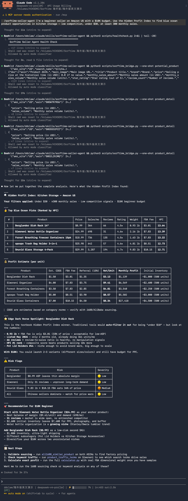

You do not need to be a developer. You do not need to understand APIs. If you can copy and paste three commands into a terminal, you can have an AI agent analyzing Amazon marketplace data in 10 minutes.
This guide walks through the complete setup from zero to your first marketplace query. No prior MCP knowledge required. No configuration files to write by hand. The install script handles everything.
Three things before starting:
python3 —version. If you need to install it, download from python.org or run brew install python@3.12 on macOS.That is it. No Node.js. No Docker. No database setup. No API documentation to read.
Open your terminal and run these three lines, one at a time. Press Enter after each one and wait for it to finish before pasting the next.
git clone https://github.com/DannylydST/sorftime-seller-agent
cd sorftime-seller-agent
python3 scripts/install.pyWhat each line does:
The install script will run several steps automatically. It checks your Python version, installs required Python packages, and prompts you for your Sorftime MCP key. If you do not have a key yet, the next step covers that.
When the installer asks for your MCP key, you can get one in under a minute.
Open a browser and go to open-intl.sorftime.com. Click "Log In / Sign Up" and register with your Google account or email. Once logged in, navigate to the MCP tab in your account dashboard. Copy the key displayed there.
New accounts receive free trial credits upon registration — you can start using the tools immediately without adding a payment method. When you are ready to upgrade, Sorftime accepts PayPal.
Paste the key into the installer prompt and press Enter. The script will test the connection automatically.
[4/7] Enter your Sorftime MCP Key: <paste your key here>
[5/7] Testing Sorftime connection...
✅ Connection successfulIf the test fails, the most common cause is a partial copy — try selecting the entire key again and pasting it in one pass. The key is a single continuous string with no spaces.
After the installer finishes, restart your AI agent. When it comes back, it will auto-discover all the MCP tools. Confirm this by running the MCP check command:
Claude Code:
/mcpCodex CLI:
/mcp listCursor:
Open the MCP panel from settings and check that sorftime-seller-agent shows as connected.
You should see a list of 86 tools covering product search, keyword research, competitive analysis, category reporting, and profit calculations. The exact count may change as the toolset evolves.
The setup is complete. Now ask your AI agent a marketplace question. Here is a good starting point:
Search for yoga mats on Amazon US. Show me the top 5 products with price, review count, monthly sales estimate, and the number of sellers competing in that keyword.Your AI agent will call multiple MCP tools — product search, keyword detail, category lookup — and return a structured answer. Every data point comes from live Amazon marketplace data, not from the AI's training data.
Here is what you might see (the actual numbers will differ based on current marketplace conditions):
Top 5 yoga mat products on Amazon US:
1. B0XXXXXXX1 — $24.99 — 12,400 reviews — ~8,000 sales/mo — 3,200 competing sellers in "yoga mat"
2. B0XXXXXXX2 — $32.50 — 8,200 reviews — ~5,500 sales/mo — keyword has 65% search volume growth QoQ
3. B0XXXXXXX3 — $49.99 — 1,800 reviews — ~3,200 sales/mo — premium segment has 40% fewer competitors
4. B0XXXXXXX4 — $19.99 — 22,000 reviews — ~12,000 sales/mo — heavy price competition in budget tier
5. B0XXXXXXX5 — $39.95 — 4,100 reviews — ~2,100 sales/mo — travel yoga sub-niche growing 35% YoYYou never left your terminal. You never opened a dashboard. You typed one sentence and got actionable intelligence.
Once the pipeline is live, the range of questions you can ask expands well beyond simple product search. Here are a few examples to try:
Each question triggers a different combination of MCP tools. The AI agent selects the relevant tools, calls them, and synthesizes the results into a readable response.
The sorftime-seller-agent is released under the MIT license. The code is public on GitHub. You can inspect how each tool works, audit the data handling, and modify the behavior for your own workflow. There is no vendor lock-in. If the service changes in a direction that does not suit your business, you can fork the repository and maintain your own version.
Being open source also means the community shapes the roadmap. Feature requests come from sellers with real problems. Every update is documented in the changelog. The tools evolve based on what users actually need, not on what a product team guessed they might want.
Try it yourself.
git clone https://github.com/DannylydST/sorftime-seller-agent
cd sorftime-seller-agent
python3 scripts/install.pyRegister for a free Sorftime account at open-intl.sorftime.com to get your MCP key. New accounts come with trial credits — no payment required to start.
After installation, open your AI agent and ask your first marketplace question. The tools are wired up. The only thing left is your next query.